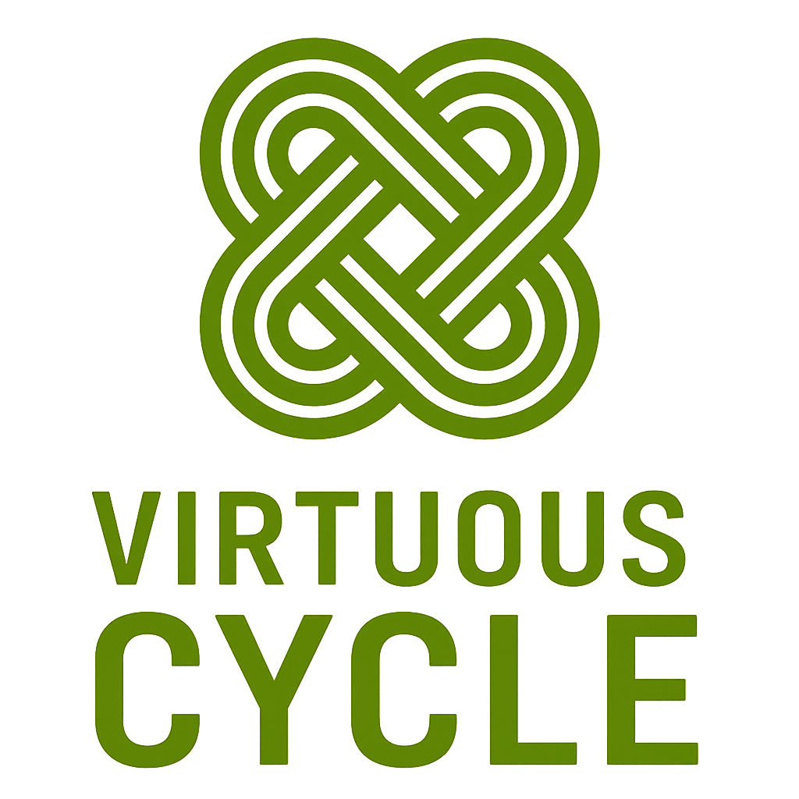

Visual
Identity Guide
Land, livelihood, and the common good.
What's inside
One source of truth. Where artifacts have drifted, this guide is the version that governs.
Land, livelihood,
and the common good
Virtuous Cycle is a mission-driven development and place-based advisory firm — helping communities grow with integrity by aligning design, investment, and strategy.
PPP + Development Advisory for Place-Strengthening Projects.
We work at the intersection of finance, land use, transportation, infrastructure, and civic stewardship — for dioceses, institutional landowners, municipalities, developers, attorneys, and engineers making high-stakes decisions about land.
When a CFO, a bishop, a development attorney, or a civil engineer opens our work, they should feel: “This firm thinks clearly, writes well, and takes my time seriously.”
We communicate command of the subject through economy of language — not volume of content. Not a startup. Not a law firm. Not a nonprofit. Not a generic consulting shop.
In all communications, lead with story, anchor in place, and speak to the common good.
Five traits, every time
Our voice always reflects these five. They are the test we run any sentence or image against before it ships.
The logo
A woven Celtic knot — four loops returning to their source. It carries the “virtuous cycle” idea before a single word is read.

Protect the mark
The logo is transparent and lives on white or deep green — never recolored, never crowded.
Keep clear space of at least x — the height of one loop of the mark — on every side. Nothing else enters this zone.
Never reproduce the mark below 32 px on screen or 0.5 in in print. Below that, the weave closes up.
One green,
the neutrals ground
Color is hierarchy, not decoration. A single green carries identity and structure; a disciplined set of neutrals does everything else.
Green is a structural signal, not a decorative one — accent one phrase per heading, and never set green text on a green field. When in doubt, let a neutral do the work.
Three voices, one system
Gelasio speaks, Poppins explains, Lora reflects. One unified system across web and documents; in Office, substitute Georgia and Arial.
The evidence suggests a corridor commitment must be locked before negotiation, not after. Informal assurances do not survive a change in counterparty, and the window narrows each quarter the parcel sits undefined.
Stewardship is not the opposite of return; over a long enough horizon, it is the source of it.
How we sound
Speak with warmth, clarity, and conviction. Accessible language. Lift up people and place. Authority comes from economy, not volume.
Do — say it like this
Don't — never this
No jargon, no corporate clichés, no exclamation marks, no second person in formal deliverables. When in doubt, remove one element.
The Virtuous Cycle Process
A proprietary five-phase cycle that guides every engagement — honoring people, place, and purpose, and returning to its source stronger.
This regenerative cycle ensures long-term alignment, trust, and transformation.
The ribbon
Layered greens and sage — flowing bands that suggest the cycle itself, returning to their source. It is the firm's one decorative element.
Covers and section dividers only. At most one signature element per page — the ribbon never shares a page with another.
Never on exhibit or data pages. Never behind text that must be read. Never recolored outside the palette.
Document anatomy
Every deliverable carries the same skeleton: identity, one lede, evidence in ranges, a single takeaway, and a confidentiality footer.
Factual summaries and important distinctions. Green border, light green tint.
What could harm the client if unaddressed. Amber, never red. Serious, not alarming.
Concrete owner-side actions and gates. The highest-priority signal — one per section.
In the world
The system holds across touchpoints — quiet, consistent, and unmistakably the firm.

The style exists so the evidence is the loudest thing on the page. When in doubt, remove one element.